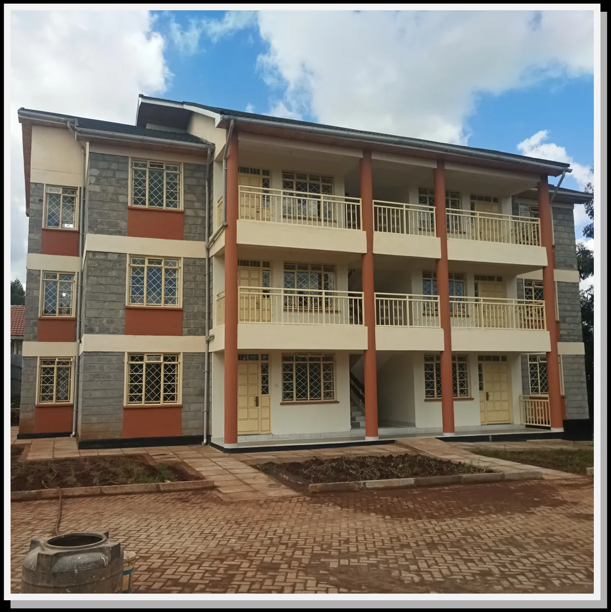
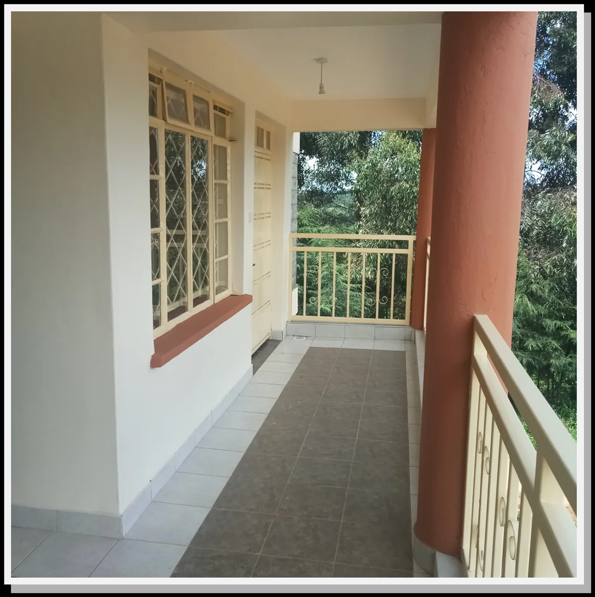
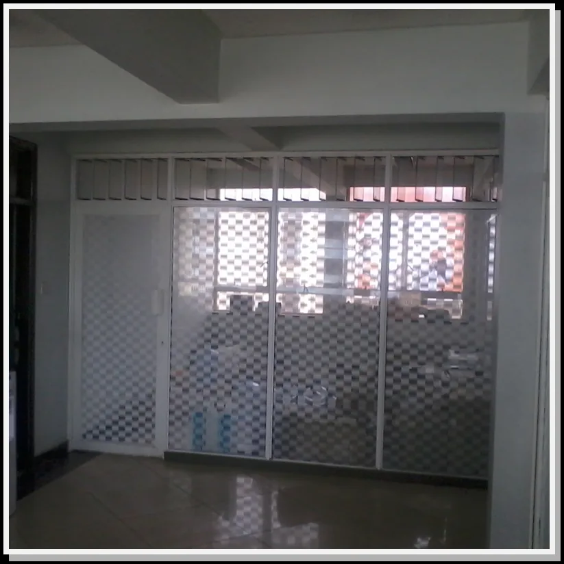
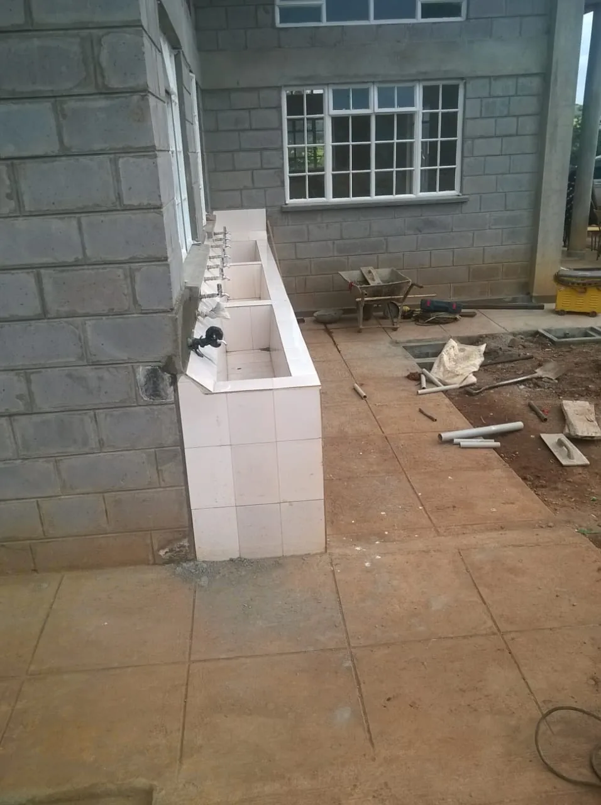
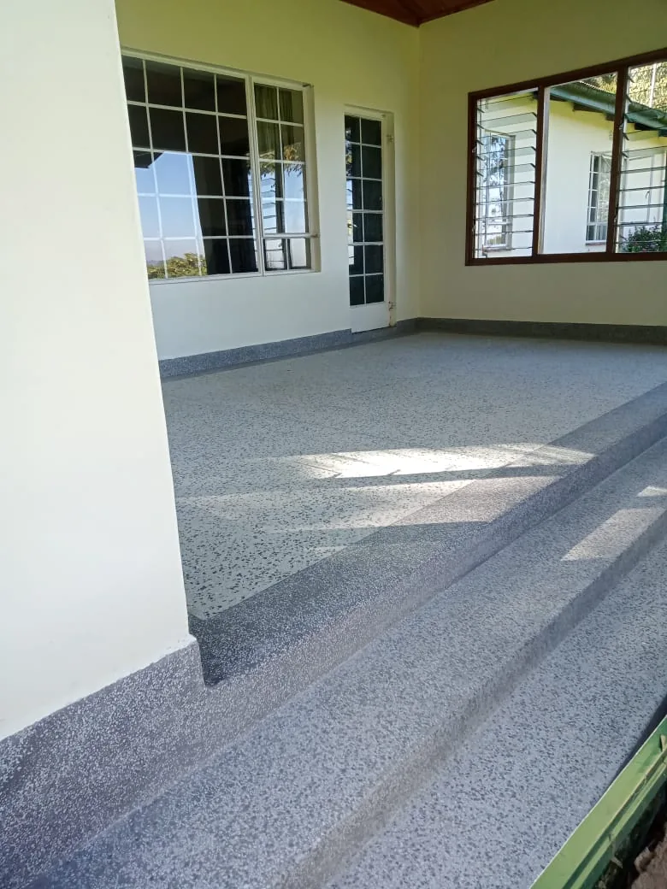
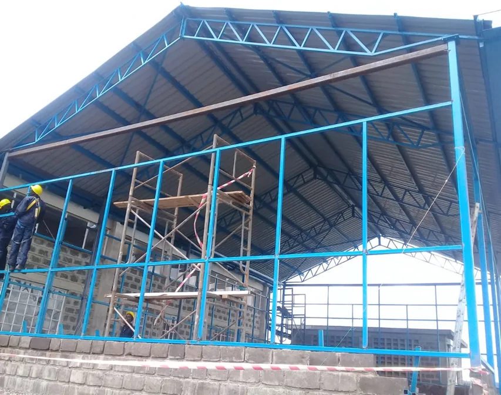
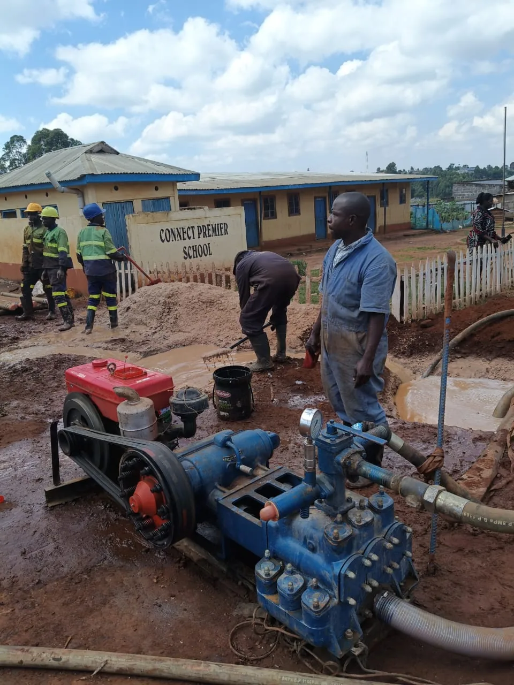

Junior Staff Housing
KTDA Olenguruone Tea Factory — project referenced as 2019–2020 on the current website.
Real project imagery currently published by Borabu Builders, reorganized into a cleaner portfolio experience.

KTDA Olenguruone Tea Factory — project referenced as 2019–2020 on the current website.

Finishing works and verandah details from the staff housing portfolio.

Repairs and redecoration works referenced as 2011–2012 on the current website.

Dining hall project currently included in the public project portfolio.

Staff office works at Finlay referenced in Borabu's current project imagery.

Steel construction capability shown through active site imagery.

Infrastructure capability across water-related construction.

Drilling and borehole services represented in the current site portfolio.

Road construction and maintenance capability.
Share what you need built, repaired or upgraded and where the work is located.